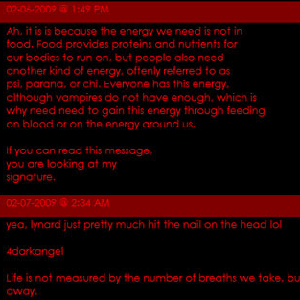

This is intended for a novice of design and web design.
Colours are important. Not just for looks and designing something cool, they are important for readability and accessibility (something for another tutorial). There are so many things to consider with colour, I'm going to just touch on the use of colour choices and the ones to be cautious of.
Have you ever seen red text on a black background? Why is that so hard to read? Dark colours next to, or on other dark colours - what's up with that? What about those neon greens and yellows? Well, unless you are in the business of selling sunglasses, they don't work very well either on the web. Red text on black doesn't work very well in print either as the black tends to swallow up the red.
Contrast in Web Colours
It’s important to have contrast between colours. Whether the colour is on top of another colour, as in the case of yellow type on a white background, or simply adjacent to another. Without contrast, it is very difficult to read and for those who are interested in making their pages accessible, they wouldn’t “cut the yellow mustard.”
Red on Black, What’s Up with That?
Red on top of black is one of those combinations that really just isn’t very readable. In fact many colours are difficult to use on top of black. Black is a strong colour, it swallows up other colours around it. Using a light grey, or putting the text inside a separate box with a different background colour might be a better solution.

The More the Merrier. Really?
Sometimes, too many colours aren't a good thing. The message you send is confusing and your layout can suffer from it. Just like bombarding your web page with too many fonts, you can do the same with too many varying colours. If you do want a variety of colours, it can be better to use different shades or tones of just a few colours instead. Plan your palette before you start.